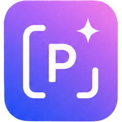
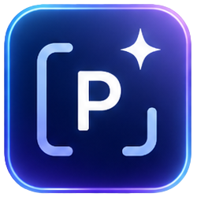

Personal AI Prompt Launcher
0개 항목
Prompt Dock
상세 보기
분류 관리
이미 있는 태그 이름을 입력하면 두 태그가 하나로 병합됩니다.
Settings
Vercel API가 Neon Postgres DB에 데이터를 저장합니다. 다른 PC에서는 같은 주소로 접속해 비밀번호를 입력하면 같은 프롬프트를 볼 수 있습니다.
로그인 확인 중...
확인
Sync Check
이 PC의 데이터와 DB 데이터가 다릅니다. 어느 쪽을 기준으로 할지 선택하세요.
백업
Private PromptBuilder
Vercel DB에 저장된 프롬프트를 불러오려면 비밀번호가 필요합니다.